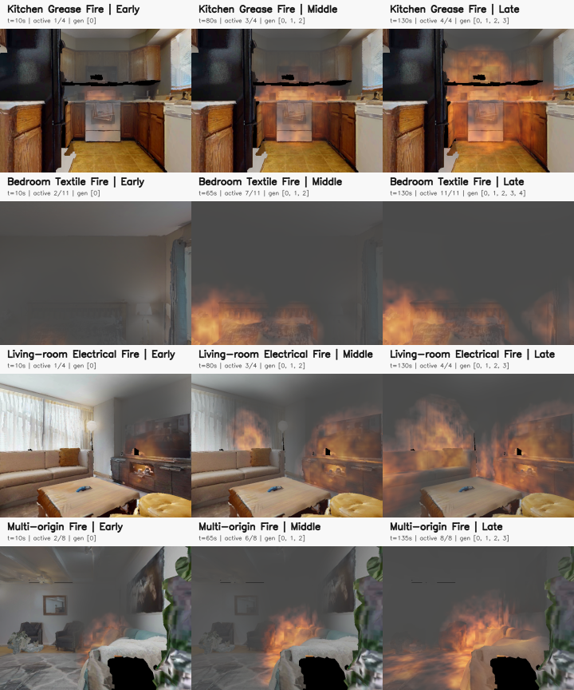

Fire impact on conventional navigation
−39.1%average success rate under dynamic fire
MobiCom 2027 submission
A physics-grounded benchmark for cooperative multi-agent navigation in dynamic indoor fire environments.

The problem
Real indoor fires are dangerous, expensive, and difficult to reproduce. Yet existing embodied navigation benchmarks largely focus on single agents operating in static, hazard-free environments.
FireNav closes this gap with controllable fire evolution, hazard-coupled sensing, extensible search targets, and standardized cooperative navigation tasks. FireWorld transforms real-world 3D scans into dynamic fire environments using semantic scenario generation, physics-inspired voxel propagation, synchronized rendering, and multimodal sensor synthesis.
Fire impact on conventional navigation
−39.1%average success rate under dynamic fire
FireNav recovery
+53.0%average success rate over conventional navigation in fire
Safer planning
−62.0%severe hazard exposure in the risk-awareness ablation
Inside the benchmark
FireWorld separates expensive hazard propagation from the online control loop, enabling reproducible fire timelines and low-latency robot interaction.
FIRE PLAN → VOXEL FIELD → TIMELINE
Semantic ignition selection and material priors parameterize where fire begins and how it evolves. The lightweight solver jointly models flame, smoke, temperature, fuel, buoyancy, spread, and dissipation.
ONE FIRE CLOCK → CONSISTENT OBSERVATIONS
RGB and optical depth degrade as smoke increases, while thermal sensing exposes heat and simulated mmWave radar preserves sparse geometry. Every modality is synthesized from the same time-indexed hazard state.
OBJECTNAV + EXTERNAL ASSET → PERSONNAV
Category-extensible ObjectNav instantiates external embodied assets while retaining the original observation, action, and evaluation interfaces. FireNav uses this path to build person-search episodes for rescue.
Hazard-coupled perception
FireNav fuses RGB-D, thermal, and smoke-resilient geometry into a shared 3D map. The hazard layer turns temperature, smoke, and sensing uncertainty into planning cost.
Models smoke attenuation, range noise, invalid returns, and depth dropout.
Projects the evolving voxel temperature into a normalized sensor image.
Approximates radar angular resolution and characteristic point sparsity.
Builds aligned obstacle and risk layers from every robot’s observations.
Category-extensible navigation
External humanoid assets become first-class navigation goals: FireNav identifies valid placements, registers the new category, synthesizes evaluation viewpoints, and samples reachable starts.
Evaluation
Across ObjectNav and PersonNav, FireNav improves task success and efficiency while reducing average and severe hazard exposure under the same dynamic-fire conditions.
Average improvement over conventional navigation under the same fire conditions.
Average hazard exposure falls through multimodal perception and risk-aware planning.
Severe hazard exposure rate drops across the evaluated tasks and planner combinations.
Success rises from 33.0% with one agent to 42.5% with three, before returns diminish.
Physical deployment
Two Unitree Go2 robots cooperatively search for a person and a bed. Each platform carries an Intel RealSense D455 and Livox Mid-360 LiDAR, with FAST-LIO2 localization and onboard trajectory tracking.
Open materials
Benchmark data, model weights, embodied assets, fire plans, and the paper are organized here for review and reproduction.
DATA RELEASE
FIRE PLANS
scenes/<scene_id>/plans
SOURCE CODE
MANUSCRIPT
Citation
This entry intentionally preserves author anonymity while the submission is under review.
@inproceedings{anonymous2027firenav,
title = {FireNav: A Physics-Grounded Benchmark for
Cooperative Multi-Agent Navigation in Dynamic
Indoor Fire Environments},
author = {Anonymous Authors},
booktitle = {Proceedings of ACM MobiCom},
year = {2027}
}